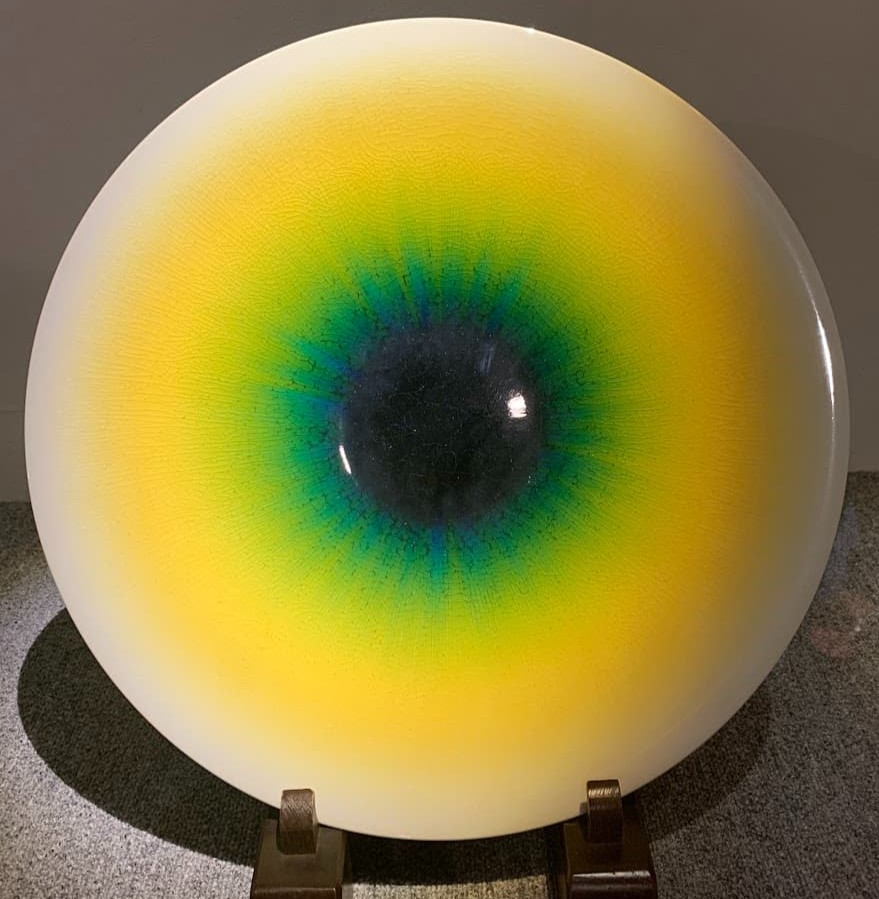

山口美術館
意外といいコレクション
外観の素朴さからの裏切り



場所：熱海山口美術館
予算：\1000～1500
アクセス：東日本旅客鉄道（JR東日本）伊東線 熱海駅より徒歩19分
地図
コメント
熱海駅から歩いて約19分。
建物の外観だけを見るとあまり期待はできなさそうだが、
コレクションは地域時期を広くカバーしている。
誰もが知るアーティストの作品が惜しみなく展示されている。
2020年開館の新しい美術館。
利用料金は大人1400円と常設展示の観覧にしては高額だが、ドリンク1杯と絵付け体験付きである。
ドリンク1杯には一般的なドリンクもあるが、抹茶を注文すると人間国宝による茶器で提供されるので抹茶がおすすめ。
茶器の指定はできないので一期一会を楽しめる。
建物は大きくないが、その分魅力が凝縮されている。